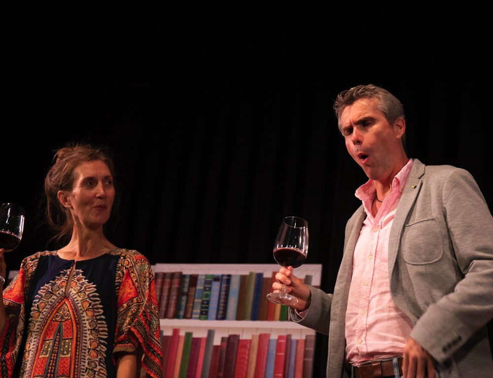
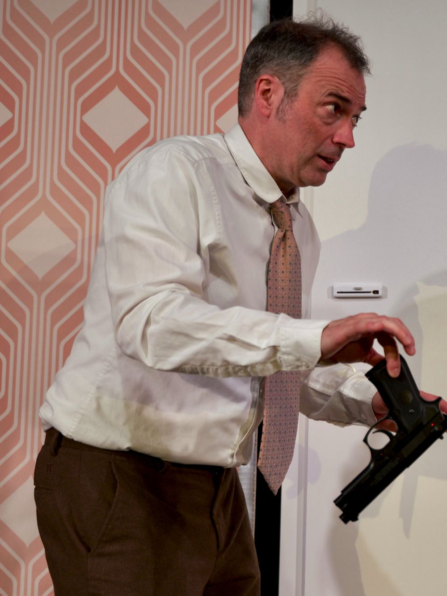
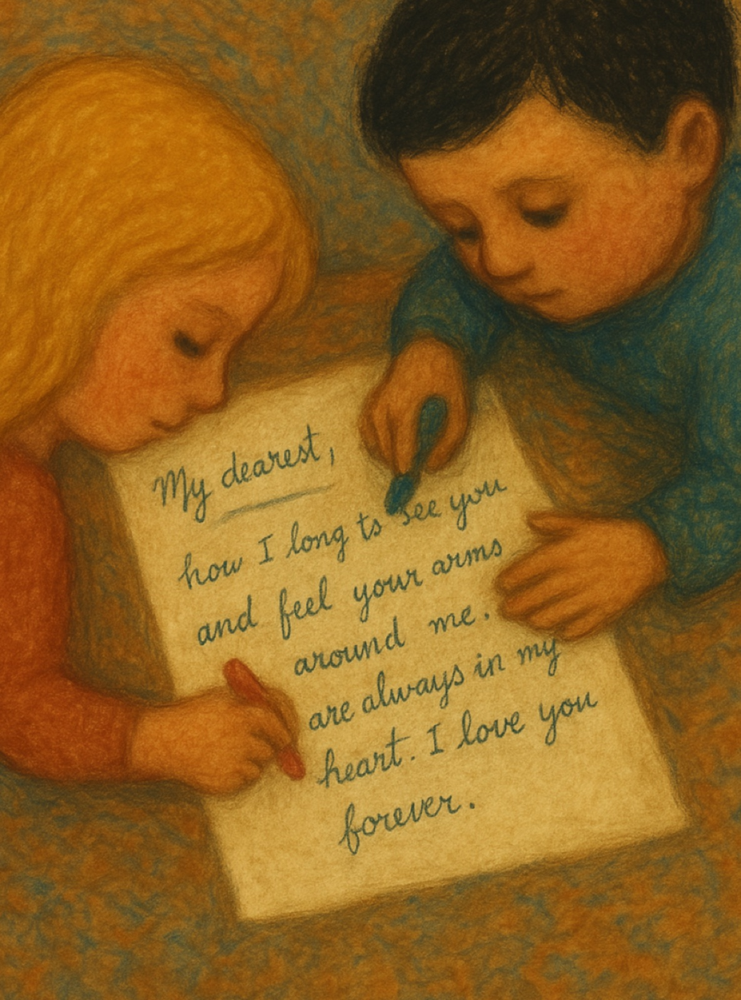
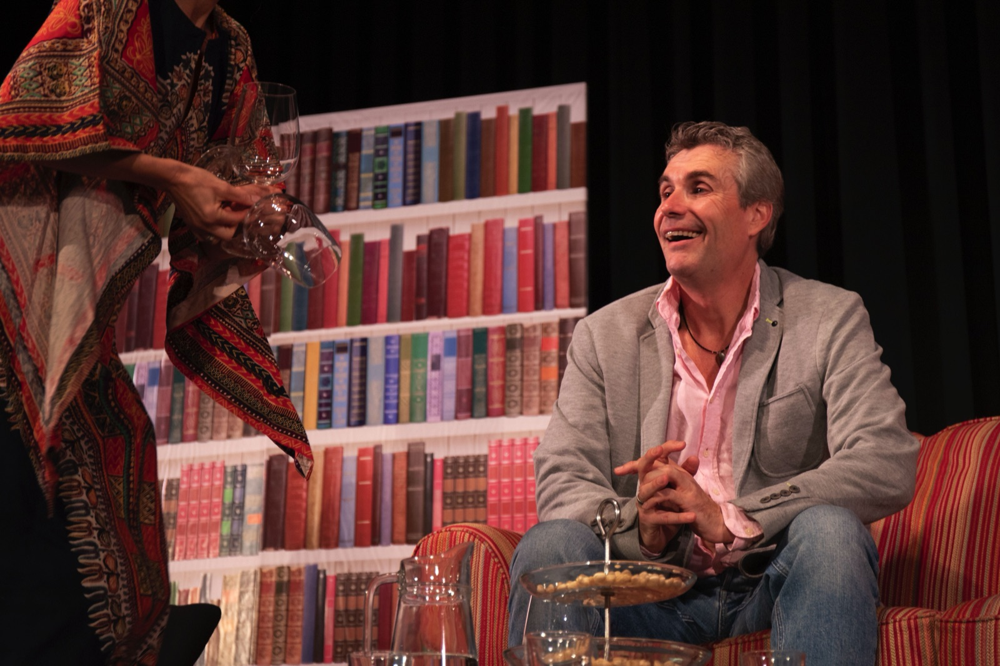

Komödien mit Tiefgang.
Monika Bujinski, Michael Kamp und Harald Schwaiger spielen seit 2012 im Herzen Dortmunds – pointiert, berührend, immer nah am Publikum.
„Bestes Boulevard, das die Zuschauer begeistert!“Ruhr Nachrichten
Die Stücke

Einszweiundzwanzig vor dem Ende
Bernard will seinem Leben ein Ende setzen – da klopft der Tod persönlich an die Tür. Dummerweise hat er sich im Stockwerk geirrt.
Mehr erfahren →
Love Letters
Eine Frau, ein Mann und ihre Briefe – ein Leben lang. Eine berührende Liebesgeschichte: mitreißend, witzig und tieftraurig.
Mehr erfahren →Mephisto
Der Pakt mit der Macht: Harald Schwaiger brilliert im Solo über Aufstieg und Verrat des Schauspielers Hendrik Höfgen.
Mehr erfahren →Nächste Termine
Die Termine für die neue Spielzeit werden in Kürze veröffentlicht. Abonnieren Sie unseren Newsletter, damit Sie nichts verpassen – oder schauen Sie direkt im Ticketshop vorbei.
Das sagt unser Publikum
„Perfektes Tempo, sprachwitzig, authentisch, genial.“Publikumsstimme
„Bereits sechs Mal dabei gewesen. Immer wieder ein Genuss – 90 Minuten wunderbare Unterhaltung und viele Lachsalven.“Publikumsstimme
„Wir haben das vierte Stück von austroPott gesehen und es war wieder großartige Unterhaltung. Danke für einen außergewöhnlichen Abend.“Publikumsstimme
„Super Location und tolle Komödie. Absolut empfehlenswert.“Publikumsstimme
„Immer wieder tolle Theaterabende.“Publikumsstimme
Wer wir sind
austroPott wurde 2012 von Richard Saringer, Harald Schwaiger und Michael Kamp ins Leben gerufen. In Kooperation mit dem Dortmunder U spielen wir dort in wechselnder Besetzung regelmäßig erfolgreiche Komödien mit Tiefgang.
Wir freuen uns auf Sie und wünschen Ihnen viel Vergnügen!
Das Team kennenlernen